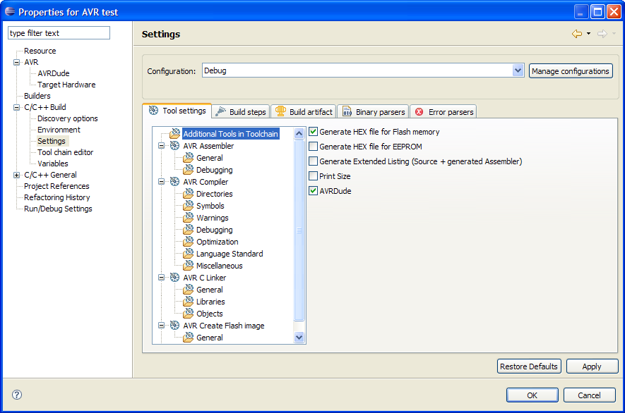

The AVR Plugin has a few useful tools added to the standard GCC Toolchain. These are currently:
Not all of these tools make sense for all configurations, e.g. if a simulator is used for debugging, it is usually not required to build the image files, as most simulators will accept the ELF file that is always created by the linker. Or if your application does not put any static data into the eeprom of the target, it is not necessary to create a eeprom image (which - depending on the avr-gcc toolchain version - will fail anyway).
If you do want to change the tools in a configuration, you can either use the standard CDT way via
Project -> Properties -> C/C++ Build -> Tool chain editor -> select tools.
As a convenience the additional AVR plugin tools can also be selected / deselected on the Tool Settings page. To do this select the project properties, expand C/C++ Build and select the Tool Settings tab. Then select the Additional Tools in Toolchain item and change the settings as required.

Note: Newly selected tools are not visible in the Tool settings view until the dialog window has been closed and reopened again.
Change Target Hardware AVR Eclipse Toolchain